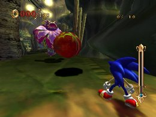
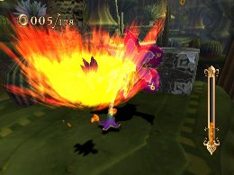
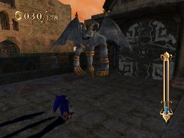
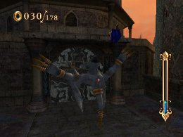
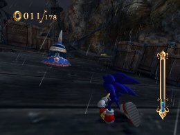
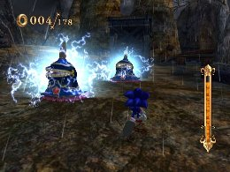
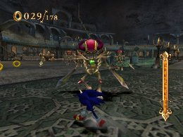
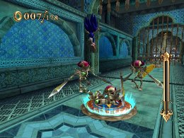

Enemy Strategies
Advanced Tactics
Many Enemies await Sonic as he makes his way through the stages. Many can be defeated easily using the Homing Attack, but here are some strategies for dealing with some of the more troublesome Enemies and bosses.
Rafflesia Djinn
These enemies appear in Dinosaur Jungle, and can be difficult to deal with—they can take a lot of damage, and cannot be damaged when the petals are closed.
You can defeat a Rafflesia Djinn with three Homing Attacks, but delaying your timing slightly on the second and third attacks will make the Homing Attacks slightly easier. If you take too much time, though, it shoots at you, so use the Homing Attack on the projectiles to avoid taking damage.
It will close its petals to defend itself, but continue using Homing Attacks to break through its defense. Also, like with any other tough enemy, Fire Gaze is useful in defeating it quickly.

Gargoyle Djinn
Gargoyle Djinns are powerful enemies that have a variety of attacks, including petrification. It can take a lot of damage, and if you don’t defeat it quickly it can turn you to stone and follow up by swiping at you with its claws.
While powerful, a Gargoyle Djinn takes time to appear, and there is a delay before it starts attacking. Accurately predicting the spot where it will appear and getting the first attack in will make things easier. Once you land the first attack, draw it in slightly for a second and third Homing Attack, as in the case of the Rafflesia Djinn. If you follow up too quickly, the lock-on may fail, or you may attack during the previous hit animation, preventing you from doing damage efficiently.

Slime Djinn
The Slime Djinn can be defeated with relative ease, but it turns into a challenge in missions where you need to finish without taking any damage. While it is less of a problem alone, it becomes much more difficult to deal with in groups.
Ideally, you can defeat it quickly using a Homing Stability-type skill. But if not, be careful to watch your timing in using Homing Attacks. If you land a Homing Attack when a Slime Djinn is electrified, you’ll take damage, so watch out. But if you find yourself starting a Homing Attack on an electrified Slime Djinn, you can cancel the Homing Attack to avoid the nasty shock.

Skeleton Djinn
A skeleton enemy that appears in the Skeleton Dome. It cannot withstand too many hits, but it attacks frequently, and its double-armed sword spinning attack has a longer range than it looks. If you use a Speed Break during its spinning attack you may end up taking damage, so caution is required.
Homing Attacks are your best bet, but a low Homing Attack can also be stopped by the Skeleton Djinn’s spinning attack, so be careful.
Every once in a while, you will encounter a Skeleton Djinn that comes back to life after it is defeated. It will continue to do this no matter how many times you defeat it, so ignore it and move on. These reviving Skeleton DjinnEnemies are not counted as part of the enemies you defeat, so you can ignore them in missions where you are trying to defeat a set number of enemies.

« Useful skills for maximizing Experience Points | Advanced Tactics | Boss Strategies(NOTE! We have completed up to the later bosses!!) »
 RSS
RSS